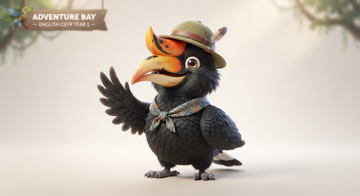
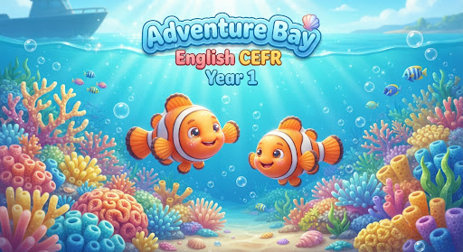
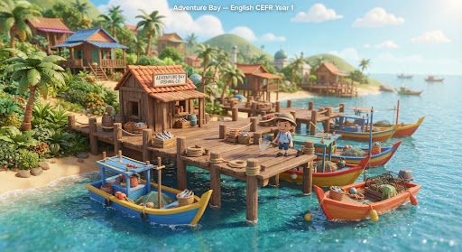

school
CEFR ENGLISH YEAR 1 • SK
hotel_class
3 / 6 English Badges
Adventure Bay ⛵ Phonics Island
Mission 3 of 6: Phonics Safari & Magic Word Blends
sailing Kemajuan Pulau
50% SELESAI

mic
Enggang The Hornbill
English Guide
“Hello Young Hero Adam! Listen to the sound and tap the missing letter blend to help Enggang build the Magic Fishing Pier!”
🏴☠️
Fun & Easy
Challenge 2 of 4 • CEFR Level 1
Phonics Safari • Island Animals

help_center
What animal is swimming by the coral reef?
Tap to complete the word blend:
F
/f/
+
check
ISH
/ɪʃ/
=
FISH
🐟 Ikan
Pilih Padanan Fonik (Choose Word Blend):
💡
Petua Fonik Enggang (Phonics Tip):
The letters ‘S’ and ‘H’ combine to whisper a soft “shhhhh” sound, like tranquil sea waves brushing across Pantai Kampung Wira!
Ganjaran Misi 3
Projek Kampung Wira
handyman

Dermaga Bot Nelayan Ajaib
Build a vibrant traditional wooden boat dock for fishermen friends in Kampung Wira.
star
+50 Bintang
water_drop
+150 Cengkerang
🗺️
Peta Misi
Adventure Bay Map
6 CEFR Modules for Year 1 Explorers
done
Unit 1: Phonics A-Z & Animal Sounds
Completed • 3 Stars Acquired
star
star
star
done
Unit 2: Action Words & ‘Can You Swim?’
Completed • 3 Stars Acquired
star
star
star
play_arrow
Unit 3: Sea Safari & Word Blends
In Progress • Challenge 2 of 4
lock
Unit 4: My Colourful Toys & Shapes
Kunci dibuka selepas Unit 3
lock
Unit 5: Family & Friends at the Beach
Kunci dibuka pada Tahap 4
lock
Unit 6: Grand Pirate Treasure & Storytime
Ganjaran Akhir Modul CEFR